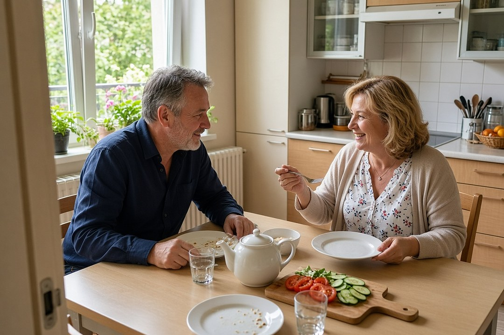
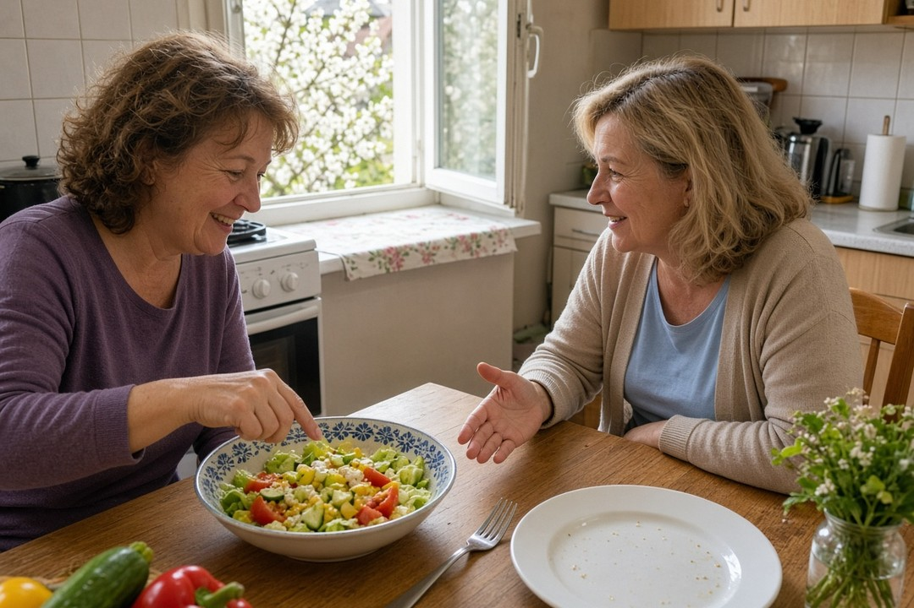
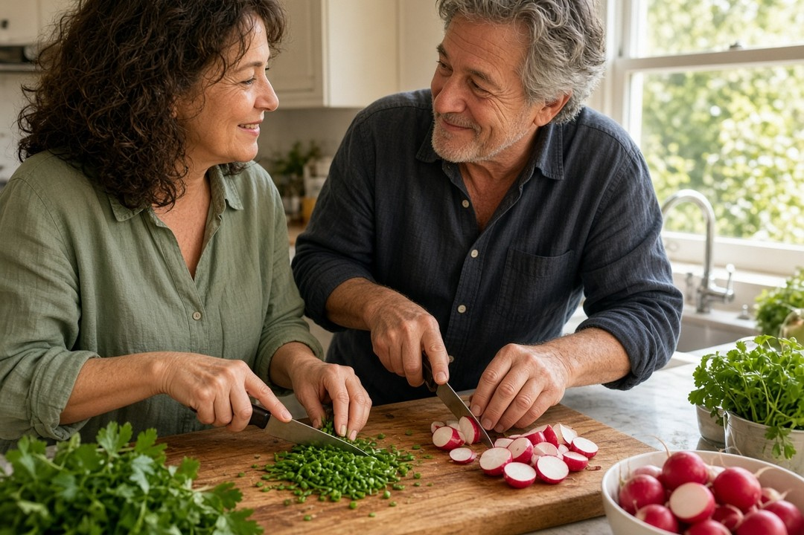

Zasada „nie jedz po 18:00” brzmi prosto: wieczorem człowiek mniej się rusza, więc każda kaloria ma ponoć iść prosto w tłuszcz. Wiele osób po jej wprowadzeniu naprawdę chudnie, więc łatwo uwierzyć, że zadziałała właśnie ta godzina. Pytanie brzmi, czy metabolizm naprawdę się wtedy wyłącza, czy chudnięcie bierze się z czego innego.
Szybka odpowiedź
Niejedzenie po 18:00 nie jest najlepszym sposobem na chudnięcie, bo metabolizm nie wyłącza się o tej godzinie. W analizie 29 badań osoby stosujące strategie pory posiłków chudły średnio tylko nieco więcej niż grupa porównawcza, po co najmniej 12 tygodniach. Część osób chudnie po tej zasadzie, bo zjada mniej wieczorem, a nie dlatego, że kalorie po osiemnastej automatycznie stają się tłuszczem.
Kluczowe wnioski
- Metabolizm nie wyłącza się o 18:00. Zegar biologiczny steruje pracą między innymi wątroby, trzustki, tkanki tłuszczowej i mięśni przez całą dobę.
- Jeśli ktoś chudnie, nie jedząc po 18:00, często dlatego, że zjada mniej wieczorem albo krócej je w ciągu dnia, a nie z powodu magicznej godziny.
- W przeglądzie 29 badań strategie pory posiłków dawały średnio tylko nieco większy spadek wagi niż opieka standardowa albo zwykła porada żywieniowa; według autorów różnice były małe i niepewne pod względem znaczenia dla zdrowia.
- W badaniu obserwacyjnym osób w wieku 18–65 lat późniejsza pora największego posiłku wiązała się z wyższym BMI. To związek, nie dowód przyczyny, i nie dotyczy osobno grupy po 50-tce.
Dlaczego zasada „nie jedz po 18:00” brzmi tak przekonująco?
Zasada „nie jedz po 18:00” brzmi przekonująco, bo obiecuje prosty mechanizm: wieczorem mniej się ruszasz, więc organizm jakoby przestaje spalać, a każdy kęs ląduje w tłuszczu. Do tego wiele osób po wprowadzeniu tej godziny naprawdę chudnie. Łatwo wtedy uznać, że zadziałał właśnie zegar, a nie to, co zniknęło z wieczornego talerza.
Taki wniosek jest zrozumiały, ale niepełny. Jeśli ktoś odcina wieczorne kanapki, słodycze albo drugą kolację, zjada w ciągu doby mniej energii. Ograniczenie energii pozostaje podstawą odchudzania. Godzina osiemnasta może być tylko narzędziem, które to ułatwia, a nie wyłącznikiem przemiany materii.

Co naprawdę dzieje się z metabolizmem, gdy zapada wieczór?
Przemiana materii nie ma wyłącznika ustawionego na 18:00 ani na moment zaśnięcia. Zegar biologiczny steruje pracą metaboliczną tkanek przez całą dobę, między innymi w wątrobie, trzustce, tkance tłuszczowej i mięśniach. Ciało nie „zasypia metabolicznie” razem z Tobą, gdy odkładasz sztućce.
Wydatek energii składa się z podstawowej przemiany materii, ruchu i energii zużytej na strawienie posiłku. W laboratorium, przy stałej ilości jedzenia, stałym rytmie snu i bez ćwiczeń, podstawowa przemiana materii rano i wieczorem nie różniła się. Nie ma więc podstaw, by twierdzić, że po osiemnastej podstawowa przemiana materii się zatrzymuje.
Wieczorem możesz spalać mniej niż w dzień głównie dlatego, że mniej się ruszasz i nie trawisz akurat obfitego posiłku. To nie jest to samo, co całkowite zatrzymanie. Kalorie zjedzone po 18:00 nie zamieniają się automatycznie w tłuszcz tylko dlatego, że wskazówka minęła tę godzinę.
Czy pora jedzenia w ogóle wpływa na spalanie kalorii?
Brak magicznej godziny 18:00 nie oznacza, że pora posiłku nigdy nic nie zmienia. Ciało ma rytm dobowy, który wpływa także na odpowiedź po jedzeniu, nie tylko na sen. Inaczej pracuje rano, inaczej wieczorem, nawet jeśli ilość jedzenia jest taka sama.
W badaniach laboratoryjnych opisanych w przeglądzie Johnston i współpracowników organizm zużywał na początku po tym samym posiłku około dwa razy więcej dodatkowej energii rano o 8:00 niż wieczorem o 20:00. Cała dodatkowa energia związana z jedzeniem to według tego przeglądu tylko około 10 procent energii spalanej w ciągu doby. Ten pomiar dotyczył wczesnej fazy po posiłku oraz godzin 8:00 i 20:00, więc nie jest dowodem na próg godziny 18:00 i nie tłumaczy całej zmiany wagi.
Co z tym zrobić? Nie rezygnuj z kolacji ze strachu przed wyłączonym metabolizmem. Jeśli przesuwasz jedzenie, rób to świadomie: więcej energii wcześniej w ciągu dnia bywa w badaniach korzystniejsze niż spychanie największej porcji na późny wieczór. To nadal nie jest rozkaz, by kończyć posiłki punkt o osiemnastej.
Co pokazują badania o porze posiłków i chudnięciu?
Przegląd systematyczny z metaanalizą Liu i współpracowników objął 29 badań z losowym przydziałem i 2485 osób. Średni wiek wynosił 44 lata, większość stanowiły kobiety, a średni wskaźnik masy ciała wynosił 33. To dorośli od 18. roku życia, obserwowani co najmniej 12 tygodni, a nie osobna grupa po pięćdziesiątce.
Porównywano trzy strategie pory jedzenia z opieką standardową albo zwykłą poradą żywieniową: jedzenie w krótszym oknie czasowym, mniejszą liczbę posiłków oraz wcześniejsze rozłożenie kalorii w ciągu dnia. Przy skróconym oknie średni spadek wagi był o 1,37 kilograma większy niż w grupie porównawczej, przy mniejszej liczbie posiłków o 1,85 kilograma, a przy wcześniejszym rozłożeniu kalorii o 1,75 kilograma. Autorzy uważają te różnice za małe i niepewne pod względem znaczenia dla zdrowia. W wielu badaniach było wysokie ryzyko błędu, a wyniki mocno się różniły, dlatego pewność całego dowodu jest ograniczona. Potrzebne są też próby, w których ilość energii jest z góry dopasowana, żeby oddzielić efekt godziny od tego, że ktoś po prostu zjada mniej.
Osobno, w badaniu przekrojowym Longo-Silvy i współpracowników wśród 2050 osób w wieku 18–65 lat późniejsza pora największego posiłku i kolacja jako największy posiłek wiązały się z wyższym BMI i większą szansą otyłości. Lunch jako największy posiłek oraz więcej niż trzy posiłki dziennie wiązały się z niższym ryzykiem otyłości. To zależności z kwestionariusza, a nie dowód, że zmiana godziny kolacji spowoduje chudnięcie. Nie wolno czytać ich jak wyniku eksperymentu u osób po 50-tce.

Gdzie jest ziarno prawdy w micie o godzinie 18:00?
Werdykt FitPo50: Ziarno prawdy jest praktyczne, nie magiczne. Zasada „nie jedz po osiemnastej” często usuwa wieczorne podjadanie i skraca czas, w którym w ogóle sięga się po jedzenie. Wtedy spada podaż energii. Komentarz do wspomnianej metaanalizy przypomina, że ograniczenie kalorii przez zmianę sposobu jedzenia pozostaje podstawą leczenia otyłości. Pora posiłków może być dodatkiem, nie zamiennikiem.
Skrócone okno jedzenia z metaanalizy to nie to samo, co sztywny zakaz po 18:00. W badaniach okno bywało różne, często ośmiogodzinne, i nie zaczynało się od jednej godziny wpisanej wszystkim do kalendarza. Rytm dobowy też nie równa się wskazówce „osiemnasta”: w laboratorium porównywano raczej 8:00 z 20:00, a nie ustawowy zakaz wieczornej kanapki.
| Obietnica mitu | Co wynika z dowodów | Co z tym zrobić |
|---|---|---|
| Po 18:00 metabolizm się wyłącza i zamienia kalorie w tłuszcz | Podstawowa przemiana materii rano i wieczorem nie różniła się w opisanym badaniu laboratoryjnym; tkanki pracują pod kontrolą zegara dobowego całą dobę. | Nie oceniaj kolacji strachem przed „śpiącym” metabolizmem. Patrz, ile zjadasz w ciągu całego dnia. |
| Sztywna godzina 18:00 jest najlepszym sposobem na chudnięcie u każdego | Strategie pory posiłków dawały tylko nieco większy średni spadek wagi niż grupa porównawcza. Ilość energii nadal jest fundamentem, a 18:00 nie było w tych badaniach uniwersalnym progiem. | Jeśli wieczorne odcięcie pomaga Ci jeść mniej, traktuj to jako swój sposób na ograniczenie wieczornego jedzenia, a nie jako regułę dla każdego. |
| Im później największy posiłek, tym gorzej dla wagi u każdego | W badaniu obserwacyjnym późniejsza pora największego posiłku wiązała się z wyższym BMI u osób 18–65 lat. To związek, nie dowód przyczyny. | Nie przenoś tej liczby na siebie jak wyroku. Możesz jednak świadomie nie spychać największej porcji na sam koniec dnia. |
Dla kogoś, kto kładzie się spać wczesnym wieczorem, ostrożność po 18:00 może po prostu oznaczać koniec podjadania. Dla kogoś, kto je kolację dużo później, ta sama godzina nic nie mówi o jego dniu. Nie ma jednego odstępu od snu, który w tych źródłach został udowodniony jako najlepsza recepta na chudnięcie.
Co naprawdę pomaga, jeśli chcesz schudnąć, zamiast pilnować 18:00?
Najpierw zdecyduj, ile jesz w ciągu doby. Bez tego sama godzina kolacji niewiele zmieni. Metaanaliza pokazała tylko niewielką przewagę strategii czasowych względem grupy porównawczej, i to przy wysokim ryzyku błędu w części badań.
Jeśli wieczorem zwykle zjada Ci się dodatkowy posiłek przed telewizorem, ograniczenie tego jedzenia może obniżyć wagę, bo spada liczba kalorii. Możesz wtedy wybrać godzinę końca jedzenia dopasowaną do swojego dnia, a nie sztywną osiemnastą. To nadal decyzja o porcji, a nie działanie samej godziny.
Gdy chcesz skorzystać z tego, co badania mówią o porze, rozsądniejszym tropem niż zakaz po 18:00 jest wcześniejsze rozłożenie większej części energii w ciągu dnia i niespychanie największego posiłku na późny wieczór. Pamiętaj, że średni wiek w metaanalizie to 44 lata, a badanie o największym posiłku było obserwacyjne. To wskazówka kierunku, nie osobisty plan po pięćdziesiątce.
Co zrobić jutro? Zamiast pytać wyłącznie „czy już po 18:00?”, zapytaj: „czy to, co teraz jem, mieści się w tym, ile naprawdę chcę zjeść dzisiaj?”. Jeśli odpowiedź brzmi nie, godzina jest tylko tłem.

Kiedy pora jedzenia ma większe znaczenie, a kiedy nie warto się nią stresować?
Większe znaczenie ma wtedy, gdy zmienia cały rozkład dnia: ktoś je prawie wszystko późnym wieczorem albo rozciąga podjadanie do nocy. Wtedy pora i ilość jedzenia mieszają się ze sobą. Mniejsze znaczenie ma sama wskazówka 18:00 u osoby, która i tak zjada podobną, spokojną kolację o stałej porze.
Ten tekst obala mit o najlepszym odchudzaniu przez zakaz po osiemnastej i nie jest indywidualnym planem leczenia. Zebrane badania nie ustanawiają stałego odstępu dwóch albo trzech godzin przed snem jako najlepszej recepty na chudnięcie.
Jeśli zasada wieczornego odcięcia daje Ci spokój i pomaga jeść mniej, możesz z niej korzystać. Jeśli pcha Cię w silny głód i chaotyczne jedzenie w nocy, nie ma dowodu, że musisz tak robić, żeby schudnąć. Wybierz sposób, który da się utrzymać, i mierz skutek tym, ile jesz oraz jak się czujesz, a nie samą godziną na ścianie.
Najczęściej zadawane pytania
czy niejedzenie po 18 pomaga schudnąć?
Może pomóc, jeśli dzięki tej zasadzie zjadasz w ciągu doby mniej. Nie dlatego, że o osiemnastej metabolizm się wyłącza. W analizie 29 badań osoby stosujące strategie pory posiłków chudły średnio tylko nieco więcej niż grupa porównawcza po co najmniej 12 tygodniach, a autorzy uważają te różnice za niepewne pod względem znaczenia dla zdrowia. Ograniczenie energii pozostaje podstawą odchudzania.
czy jedzenie po 18 tuczy?
Kalorie zjedzone po 18:00 nie zamieniają się automatycznie w tłuszcz tylko dlatego, że minęła ta godzina. Podstawowa przemiana materii rano i wieczorem nie różniła się w opisanym badaniu laboratoryjnym. Pora jedzenia może jednak coś zmieniać: na początku po tym samym posiłku organizm spalał więcej dodatkowej energii rano o 8:00 niż wieczorem o 20:00, a w badaniu obserwacyjnym późniejsza pora największego posiłku wiązała się z wyższym BMI. To nie jest wyrok, że kolacja zawsze tuczy, ani dowód progu godziny 18:00.
czy metabolizm zwalnia w nocy?
Mechanizm mitu: Wieczorem i w nocy możesz zużywać mniej energii niż w aktywny dzień, głównie dlatego, że mniej się ruszasz i nie trawisz akurat dużego posiłku. To nie znaczy, że przemiana materii się zatrzymuje. Zegar biologiczny steruje pracą tkanek przez całą dobę, a w laboratorium podstawowa przemiana materii rano i wieczorem się nie różniła.
czy niejedzenie po 18 jest zdrowe?
Nie ma jednego werdyktu „zdrowe” albo „niezdrowe” dla każdego. Jeśli zasada obcina wieczorne nadwyżki i da się ją utrzymać, może być zwykłym sposobem na mniejsze spożycie energii. Jeśli kończy się silnym głodem i chaotycznym jedzeniem w nocy, nie ma dowodu, że musisz tak robić dla zdrowia albo szczupłości. Zebrane badania nie ukazują godziny 18:00 jako uniwersalnej granicy zdrowotnej.
jedzenie po 18 prawda czy mit?
Mitem jest to, że po 18:00 metabolizm się wyłącza i każda kaloria automatycznie staje się tłuszczem. Nie jest mitem, że pora posiłków może mieć pewne znaczenie: wcześniejsze rozłożenie energii wiązało się z nieco większym spadkiem wagi niż w grupie porównawczej, a w badaniu obserwacyjnym późniejsza największa porcja wiązała się z wyższym BMI. Prawda leży więc obok mitu, a nie w sztywnej godzinie.
kolacja ile przed snem?
Zebrane badania nie ustalają jednej liczby godzin przed snem jako najlepszej recepty na chudnięcie. Nie wynikają z nich też uniwersalne dwie albo trzy godziny. Ważniejsze od stopera jest to, czy kolacja wpisuje się w całodzienną ilość jedzenia i czy nie spychasz największej porcji na sam koniec dnia. Godzina osiemnasta sama w sobie tego nie rozstrzyga.
Źródła
- Liu H, et al. Meal Timing and Anthropometric and Metabolic Outcomes: A Systematic Review and Meta-analysis. JAMA Network Open. 2024. DOI: 10.1001/jamanetworkopen.2024.42163. 29 badań z losowym przydziałem, 2485 osób, średni wiek 44 lata, obserwacja co najmniej 12 tygodni.
- Popp CJ, Manoogian ENC, Manoogian, et al. Meal Timing Interventions for Weight Loss and Metabolic Health—What Does the Evidence Show? JAMA Network Open. 2024. DOI: 10.1001/jamanetworkopen.2024.42140. Komentarz towarzyszący metaanalizie Liu, nie przegląd systematyczny.
- Johnston JD, et al. Circadian Rhythms, Metabolism, and Chrononutrition in Rodents and Humans. Advances in Nutrition. 2016. DOI: 10.3945/an.115.010777. Epub 15.03.2016. Przegląd, nie badanie pierwotne; opisuje zegary tkanek oraz laboratoryjne porównanie termogenezy poposiłkowej o 8:00 i 20:00.
- Longo-Silva G, et al. Association of largest meal timing and eating frequency with body mass index and obesity: a cross-sectional study. Clinical Nutrition ESPEN. 2024 (rocznik papierowy kwiecień 2024; data publikacji elektronicznej w rekordzie PubMed: 24.01.2024). DOI: 10.1016/j.clnesp.2024.01.022. Badanie przekrojowe, 2050 osób w wieku 18–65 lat. Strona PubMed bywa za ścianą ciasteczek (HTTP 203); tożsamość publikacji potwierdzono przez PubMed esummary/efetch.
Uwaga: Artykuł ma charakter informacyjny i edukacyjny. Nie zastępuje konsultacji lekarskiej, diagnozy ani leczenia.